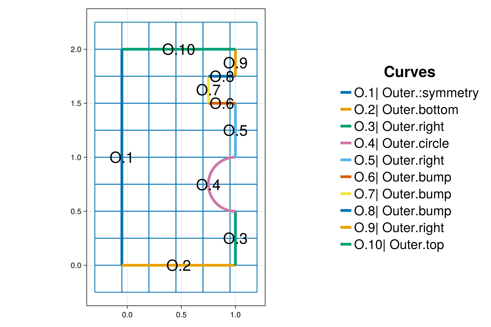
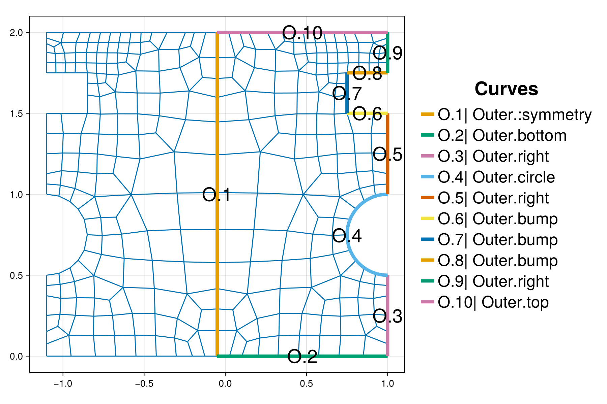
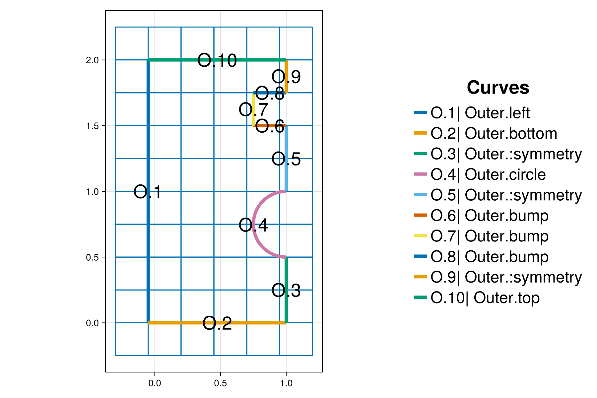
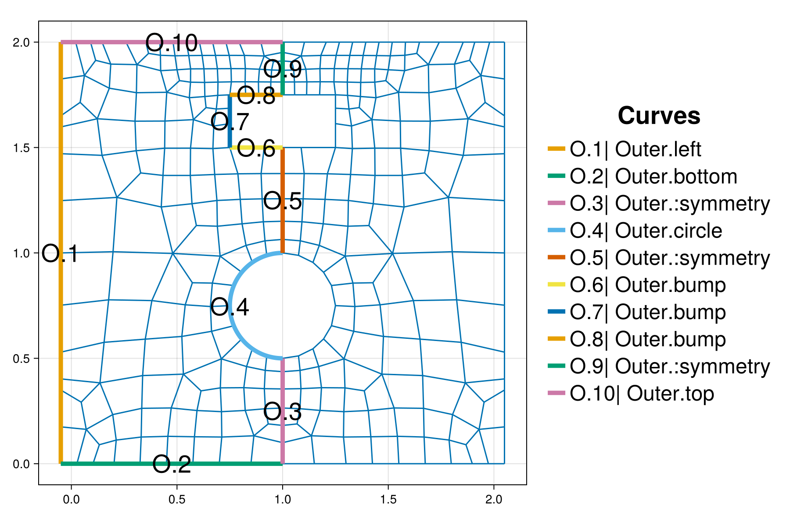

Symmetric mesh
The purpose of this tutorial is to demonstrate how to create an unstructured mesh that is symmetric with respect to a straight line outer boundary as prescribed by the user. At the end of this tutorial one can find the script necessary to generate the meshes described herein.
It provides details and clarification for the script interactive_symmetric_mesh.jl from the examples folder.
Synopsis
This tutorial demonstrates how to:
- Indicate a symmetry boundary line.
- Construct an outer boundary with several connected curves.
- Add the background grid when an outer boundary curve is present.
- Rename boundaries in an existing interactive mesh project.
- Visualize an interactive mesh project.
Initialization
Before we start, we need to load the required packages. Besides HOHQMesh.jl, we use CairoMakie.jl for visualization. Alternatively, one can use GLMakie for interactive visualization in a Julia REPL session.
using HOHQMeshusing CairoMakieNow we are ready to interactively generate unstructured quadrilateral meshes!
We create a new project with the name "symmetric_mesh" and assign "out" to be the folder where any output files from the mesh generation process will be saved. By default, the output files created by HOHQMesh will carry the same name as the project. For example, the resulting HOHQMesh control file from this tutorial will be named symmetric_mesh.control. If the folder out does not exist, it will be created automatically in the current working directory.
symmetric_mesh = newProject("symmetric_mesh", "out");Adjusting project parameters
When a new project is created it is filled with several default RunParameters such as the polynomial order used to represent curved boundaries or the mesh file format. These RunParameters can be queried and adjusted with appropriate getter/setter pairs, see Controlling the mesh generation for more details.
For the symmetric_mesh project we query the current value for the polynomial order
getPolynomialOrder(symmetric_mesh)5We change the default polynomial order in the symmetric_mesh to be $6$ with a corresponding setter function
setPolynomialOrder!(symmetric_mesh, 6);Add a background grid
HOHQMesh requires a background grid for the mesh generation process. This background grid sets the base resolution of the desired mesh. HOHQMesh will automatically subdivide from this background grid near sharp features of any curved boundaries.
For a domain bounded by an outer boundary curve, this background grid is set by indicating the desired element size in the $x$ and $y$ directions. To start, we set the background grid for symmetric_mesh to have elements with side length $0.25$ in each direction
addBackgroundGrid!(symmetric_mesh, [0.25, 0.25, 0.0]);Add the outer boundary
With the background grid size set, we next build the outer boundary for the present mesh project. This outer boundary is composed of nine straight line segments and a half circle arc. The curves will afterwards be added to the mesh project symmetric_mesh in counter-clockwise order as required by HOHQMesh.
line1 = newEndPointsLineCurve(":symmetry", [-0.05, 2.0, 0.0], [-0.05, 0.0, 0.0]);line2 = newEndPointsLineCurve("bottom", [-0.05, 0.0, 0.0], [1.0, 0.0, 0.0]);line3 = newEndPointsLineCurve("right", [1.0, 0.0, 0.0], [1.0, 0.5, 0.0]);half_circle = newCircularArcCurve("circle", # curve name [1.0, 0.75, 0.0], # circle center 0.25, # circle radius 270.0, # start angle 90.0, # end angle "degrees"); # angle unitsline4 = newEndPointsLineCurve("right", [1.0, 1.0, 0.0], [1.0, 1.5, 0.0]);line5 = newEndPointsLineCurve("bump", [1.0, 1.5, 0.0], [0.75, 1.5, 0.0]);line6 = newEndPointsLineCurve("bump", [0.75, 1.5, 0.0], [0.75, 1.75, 0.0]);line7 = newEndPointsLineCurve("bump", [0.75, 1.75, 0.0], [1.0, 1.75, 0.0]);line8 = newEndPointsLineCurve("right", [1.0, 1.75, 0.0], [1.0, 2.0, 0.0]);line9 = newEndPointsLineCurve("top", [1.0, 2.0, 0.0], [-0.05, 2.0, 0.0]);The given boundary names will also be the element boundary names written to the mesh file. The only exception is the first boundary curve that is given the name ":symmetry". This outer boundary curve name is a special keyword in HOHQMesh that says it is a straight line across which a reflection will occur. Two worthwhile notes are
- the leading colon on this boundary name keyword is present to avoid conflicts with any other use of the symmetry name.
- if the curve designated as
":symmetry"is not a straight line, then an error is thrown by HOHQMesh and the mesh will not be reflected.
The name of the reflection boundary line is not case-sensitive, thus":symmetry" or ":Symmetry" or ":SYMMETRY" are all valid and will be recognized as the keyword for symmetry.
Now that all the outer boundary curves are defined we add them to the symmetric_mesh project in counter-clockwise order
addCurveToOuterBoundary!(symmetric_mesh, line1)addCurveToOuterBoundary!(symmetric_mesh, line2)addCurveToOuterBoundary!(symmetric_mesh, line3)addCurveToOuterBoundary!(symmetric_mesh, half_circle)addCurveToOuterBoundary!(symmetric_mesh, line4)addCurveToOuterBoundary!(symmetric_mesh, line5)addCurveToOuterBoundary!(symmetric_mesh, line6)addCurveToOuterBoundary!(symmetric_mesh, line7)addCurveToOuterBoundary!(symmetric_mesh, line8)addCurveToOuterBoundary!(symmetric_mesh, line9)Added curve :symmetry to the outer boundary chain.
Added curve bottom to the outer boundary chain.
Added curve right to the outer boundary chain.
Added curve circle to the outer boundary chain.
Added curve right to the outer boundary chain.
Added curve bump to the outer boundary chain.
Added curve bump to the outer boundary chain.
Added curve bump to the outer boundary chain.
Added curve right to the outer boundary chain.
Added curve top to the outer boundary chain.We visualize the outer boundary curve chain and background grid with the following Here, we take the sum of the keywords MODEL and GRID in order to simultaneously visualize the outer boundary and background grid. The resulting plot is given below. The chain of outer boundary curves is called "Outer" and its constituent curve segments are labeled accordingly with the names prescribed in the curve construction above. The optional argument figureSize is used here to produce plots with reduced white space for better presentation in the docs.
plotProject!(symmetric_mesh, MODEL+GRID; figureSize = (900, 600))
Generate the mesh
We next generate the mesh from the information contained in symmetric_mesh. This will output the following files to the out folder:
symmetric_mesh.control: A HOHQMesh control file for the current project.symmetric_mesh.tec: A TecPlot formatted file to visualize the mesh with other software, e.g., ParaView.symmetric_mesh.mesh: A mesh file with formatISM-V2(the default format).
To do this we execute the command
generate_mesh(symmetric_mesh)
*******************
2D Mesh Statistics:
*******************
Total time = 5.4896000000000000E-002
Number of nodes = 343
Number of Edges = 626
Number of Elements = 284
Number of Subdivisions = 2
Mesh Quality:
Measure Minimum Maximum Average Acceptable Low Acceptable High Reference
Signed Area 0.00220407 0.06242615 0.01366911 0.00000000 999.99900000 1.00000000
Aspect Ratio 1.01394925 2.04605013 1.20933780 1.00000000 999.99900000 1.00000000
Condition 1.00090927 1.63712117 1.11296179 1.00000000 4.00000000 1.00000000
Edge Ratio 1.01202453 2.93333325 1.41191150 1.00000000 4.00000000 1.00000000
Jacobian 0.00153988 0.05762182 0.01128942 0.00000000 999.99900000 1.00000000
Minimum Angle 49.13177233 89.02555379 75.90857703 40.00000000 90.00000000 90.00000000
Maximum Angle 91.06976230 130.32470794 105.68124689 90.00000000 135.00000000 90.00000000
Area Sign 1.00000000 1.00000000 1.00000000 1.00000000 1.00000000 1.00000000
Boundary Error Quality:
Boundary Name Max L2 Error Max H1 Error
Outer Boundary 2.97126900E-12 5.26628911E-09Note that the call to generate_mesh prints mesh quality statistics to the screen and updates the visualization. The HOHQMesh output also reports the maximum $L^2$ and $H^1$ errors along the outer boundary. The background grid is removed from the visualization when the mesh is generated.
Currently, only the "skeleton" of the mesh is visualized. Thus, the high-order curved boundary information is not seen in the plot but this information is present in the mesh file generated.

The boundary names of the original outer curves will be those defined by the user in their construction above. The boundary labeled ":symmetry" is now internal and is marked appropriately as such. The reflected boundary names are appended with _R (for reflected) in the mesh file. For instance, the reflected version of the boundary bottom has the name bottom_R or the boundary named circle has the reflected boundary counterpart named circle_R. These can be changed as desired by editing the mesh file.
Changing the reflection line
It is also possible to create a symmetry boundary composed of multiple co-linear segments.
To change the line along which the mesh is reflected, we remove the current mesh that was just generated and re-plot the model curves and background grid.
remove_mesh!(symmetric_mesh);updatePlot!(symmetric_mesh, MODEL+GRID)
The remove_mesh! command deletes the mesh information from the interactive mesh project symmetric_mesh as well as the mesh file symmetric_mesh.mesh, control file symmetric_mesh.control, plot file symmetric_mesh.tec, and mesh statistics file symmetric_mesh.txt from the out folder.
To illustrate the reflection about multiple boundary curves (which must be co-linear!), we first rename the current symmetry boundary curve O.1 to have the name "left". Next, we rename all the co-linear boundary curves O.3, O.5, and O.9 to have the name ":symmetry". Both are done with the function renameCurve!
renameCurve!(symmetric_mesh, ":symmetry", # existing curve name "left") # new curve namerenameCurve!(symmetric_mesh, "right", ":symmetry")After the boundary names are adjusted the plot updates automatically to give the figure below.

We then generate the new mesh from the information contained in symmetric_mesh. Again, a check ensures that the curves designated as ":symmetry" are co-linear. An error is thrown if this is not the case and the mesh will not be reflected. This saves the control, tec, and mesh files into the out folder and yields
generate_mesh(symmetric_mesh)
*******************
2D Mesh Statistics:
*******************
Total time = 5.6435000000000013E-002
Number of nodes = 337
Number of Edges = 622
Number of Elements = 284
Number of Subdivisions = 2
Mesh Quality:
Measure Minimum Maximum Average Acceptable Low Acceptable High Reference
Signed Area 0.00200919 0.06472958 0.01366911 0.00000000 999.99900000 1.00000000
Aspect Ratio 1.01394929 2.04364136 1.21258194 1.00000000 999.99900000 1.00000000
Condition 1.00091018 1.91814253 1.12027830 1.00000000 4.00000000 1.00000000
Edge Ratio 1.01202453 3.53385826 1.42073382 1.00000000 4.00000000 1.00000000
Jacobian 0.00135817 0.06134810 0.01120294 0.00000000 999.99900000 1.00000000
Minimum Angle 43.09402469 89.33487540 75.97399519 40.00000000 90.00000000 90.00000000
Maximum Angle 90.57451347 143.07429487 105.78829265 90.00000000 135.00000000 90.00000000
Area Sign 1.00000000 1.00000000 1.00000000 1.00000000 1.00000000 1.00000000
Boundary Error Quality:
Boundary Name Max L2 Error Max H1 Error
Outer Boundary 2.97126900E-12 5.26628911E-09The updated visualization is given below. Again, the HOHQMesh output also reports the maximum $L^2$ and $H^1$ errors along the outer boundary. Note, the flexibility to define multiple co-linear symmetric boundaries creates a symmetric mesh with closed internal boundaries. In this example, a circle and a rectangle.

Summary
In this tutorial we demonstrated how to:
- Indicate a symmetry boundary line.
- Construct an outer boundary with several connected curves.
- Add the background grid when an outer boundary curve is present.
- Rename boundaries in an existing interactive mesh project.
- Visualize an interactive mesh project.
This page was generated using Literate.jl.